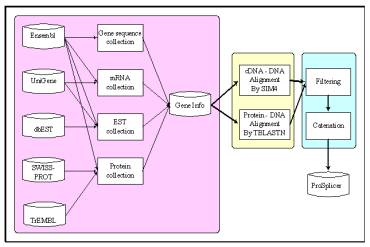

|
Hsien-Da Huang[1], Jorng-Tzong
Horng[2], Chau-Chin Lee[3],
and Baw-Jhiune Liu3
Keywords: alternative splicing, database, proteins, splice site
1 Introduction.
ProSplicer is a database of putative alternative splicing information derived by using the alignment of proteins, mRNA sequences and ESTs against the human genomic sequences. Proteins, mRNA and expressed sequence tags (ESTs) provide valuable evidences to reveal the splice variants of genes. Using the alternative splicing information in the database can facilitate users to investigate the alternative splicing forms and tissue-specific expression of the considered genes. ProSplicer is now available at http://bioinfo.csie.ncu.edu.tw/ProSplicer/.
In ProSplicer, whole human genomic sequences and the genes including known or novel ones are taken into account to investigate the alternative splicing variants. A graphical user interface is also provided to reveal the alternative splicing of the considered genes. The alternative splicing sites predicted by protein, mRNA or EST sequences are also provided. Tissue information provided in mRNA, and EST sequences also guide to reveal the tissue favorable alternative splicing forms, e.g., exon skipping. The database provides keyword search for retrieving and searching the contents in the database and graphical interface is also provided to show the alternative splicing forms.
2 Methods
The genomic sequences and genes annotation information are obtained from ENSEMBL [1] (Release on May 28, 2002) and there are 21,786 genes including known and novel genes. The related mRNA sequences and EST sequences of the genes are retrieved from UniGene [2] (Release 147), containing 96,105 gene clusters of human. The EST sequences are from dbEST (Release Feb.22 2002). The protein sequences are obtained from the SWISS-PROT and TrEMBL[3] (Release 20, Mar. 2002).
The prediction approach of alternative splicing consists of three main phases and the system flow is shown in Figure 1. The three phases are the preprocessing phase, the alignment phase, and the filtering phase. In the preprocessing phase, the gene genomic sequences, EST, mRNA sequences and protein sequences, which are stored in different biological databases, are collected, converted, and integrated into a single database, namely GeneInfo. All the sequences are maintained and prepared for the analysis of the alignment phase. In the alignment phase, the protein sequences are aligned to the gene genomic sequences by TBLASTN [4], as well as the mRNA and EST sequences are aligned by the alignment tool, SIM4 [5]. The exon candidates are generated by both the alignment tools. In the filtering phase, we filter the noise of the exon candidates, and connect the exon candidates as reasonable transcripts form of each EST, mRNA and protein sequences by considering their sequential order of matching blocks. Finally, the exon candidates of the alternative splicing forms are provided in the database of ProSplicer.

Figure 1: The system flow of ProSplicer.
3 Results
As shown in Table 1, the ProSplicer takes the materials of 21,786 genes form ENSEMBL [5] and totally 2,311,460 sequences including protein, mRNA, and EST sequences to investigate the local region similarities of sequence to reveal the alternative splicing variants. The amount of exon candidates generated by alignment tools are shown in Table 1.
|
Sequence Type |
Amount of Sequences |
Amount of Exon Candidates | ||
|
Protein |
44,184 |
26,115 (human) |
442,077 |
279,656 (human) |
|
18,069 (mouse) |
162,421 (mouse) | |||
|
mRNA |
20,577 |
395,619 | ||
|
EST |
2,246,699 |
12,361,685 | ||
|
Total |
2,311,460 |
13,199,381 | ||
Table 1: The amount of materials and exon candidates in ProSplicer.
[1] Hubbard T, Barker D, Birney E, Cameron G, et al. The Ensembl genome database project. Nucl Acids Res 2002, 30: 38-41.
[2] Schuler GD, et al: A gene map of the human genome. Science 1996, 274 (5287): 540-546.
[3] Bairoch A, Apweiler R: The SWISS-PROT protein sequence database and its supplement TrEMBL in 2000. Nucl Acids Res 2000, 28: 45-48.
[4] Altschul SF, Gish W, Miller W, Myers EW, Lipman DJ: Basic local alignment search tool. J Mol Biol 1990, 215: 403-410.
[5] Florea L, Hartzell G, Zhang Z, Rubin GM, Miller W: A computer program for aligning a cDNA sequence with a genomic DNA sequence. Genome Res 1998, 8: 967-974.
[1] Department of Computer Science and Information Engineering, National Central University, Taiwan. E‑mail: damay@db.csie.ncu.edu.tw
[2] Department of Computer Science and Information Engineering, National Central University, Taiwan. E‑mail: horng@db.csie.ncu.edu.tw
[3] Department of Computer Science and Engineering, Yuan-Ze University, Taiwan.